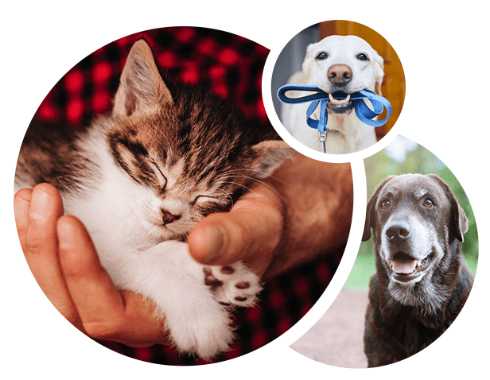
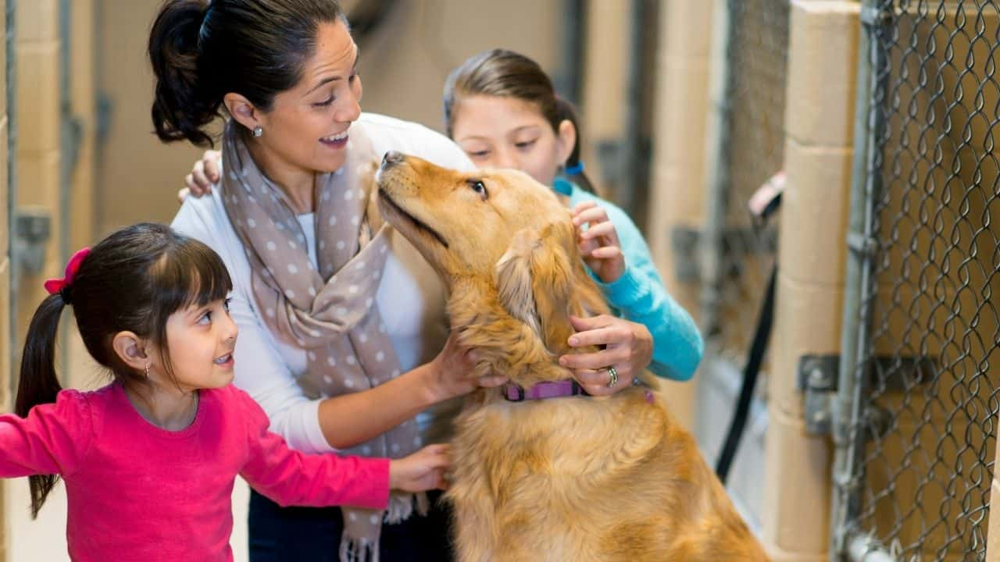
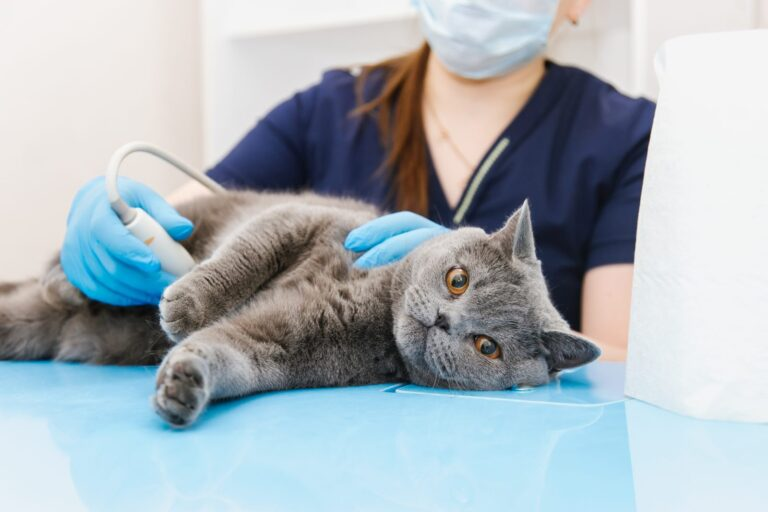

Adoptar es una decisión importante. Hay varios factores que debes tener en cuenta antes de hacerlo. Por eso queremos ayudarte para que esta experiencia sea una de las mejores tanto para ti como para tu futuro compañero. Lo primero que debes recordar es la gran responsabilidad que implica tener un animal. Lamentablemente, es común que algunas personas adopten un cachorro o gatito por impulso y luego los abandonen. Esto ocurre cuando se dan cuenta del compromiso a largo plazo que conlleva tener una mascota en casa.
Pasos para una Adopción Responsable:
1er PASO:
Elegí la mascota ideal para vos y tu familia de acuerdo con tu estilo de vida y preferencias
2do PASO:
Prepará tu hogar para el nuevo integrante
3er PASO:
Llevalo al veterinario: Es importante que lo revise un especialista para llevar un control de vacunas y/o estirilizarlo